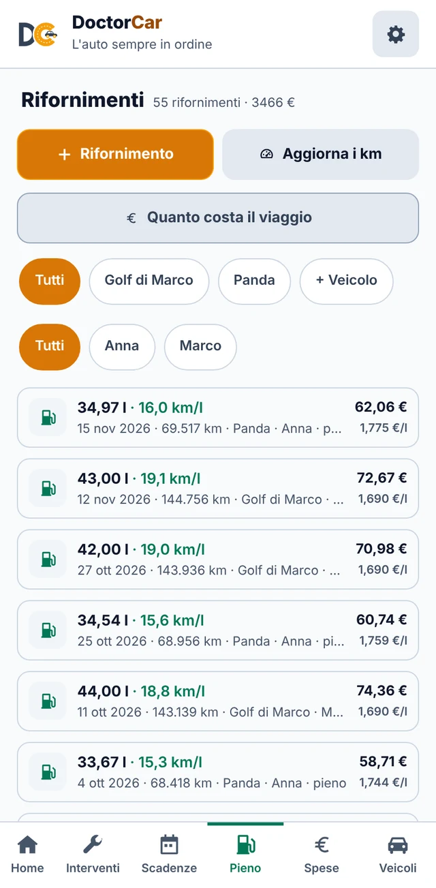
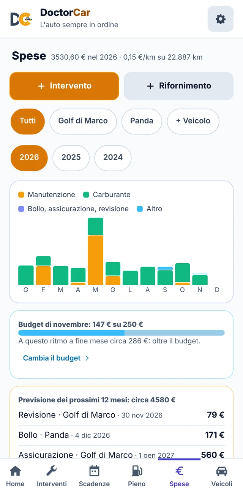
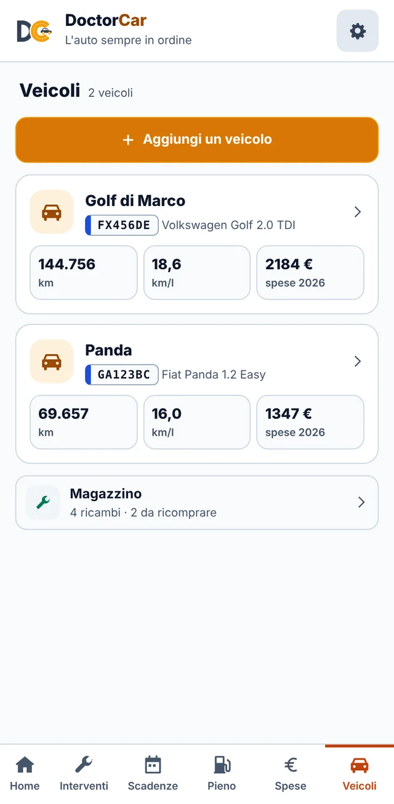
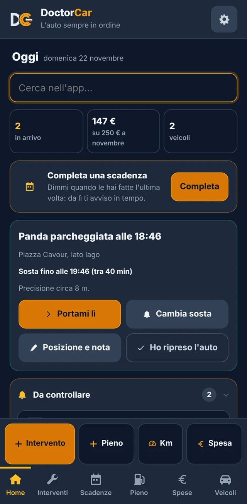

DoctorCar
Il libretto di manutenzione della tua auto, anche senza internet.
Interventi, scadenze, rifornimenti e spese sempre sotto controllo, in italiano e in inglese, senza account.
- Gratis
- Open source
- Senza account
- Funziona offline
- Android 10+




Cosa sa fare
Mai più scadenze dimenticate
Bollo, assicurazione, revisione, tagliando: ti avvisa in tempo e conosce le regole italiane.Bollo, assicurazione, revisione, tagliando: ti avvisa in tempo e conosce le regole italiane.
Quanto costa davvero la tua auto
Consumo reale tra due rifornimenti, spese mese per mese, costo al chilometro.Consumo reale tra due rifornimenti, spese mese per mese, costo al chilometro.
Tutta la storia in tasca
Ogni intervento con data, km, officina, costo e foto delle fatture. Libretto in PDF, utile quando vendi.Ogni intervento con data, km, officina, costo e foto delle fatture.
Famiglie con più auto
Ognuno registra dal proprio telefono e i dati restano uguali per tutti, senza cloud.Ognuno registra dal proprio telefono e i dati restano uguali per tutti, senza cloud.
Costo di un viaggio
Calcola quanto costa un percorso in base al tuo consumo reale.Calcola quanto costa un percorso in base al tuo consumo reale.
Italiano e inglese
Guida e tutorial integrati nell'app.Guida e tutorial integrati nell'app.
Guarda come funziona
Brevi filmati, senza audio.
Le scadenze
Rifornimenti e consumo
Costo di un viaggio
Come si inizia
- InstallaScarica DoctorCar e apri l'app.
- Aggiungi l'autoInserisci targa, modello e chilometri.
- RegistraScadenze, interventi e rifornimenti: l'app fa i conti per te.
Domande frequenti
Posso usarlo con più auto?
Sì, quante ne vuoi, anche con la scheda di ciascun veicolo.
Funziona senza internet?
Sempre. Non serve nessuna connessione per usarlo.
Quanto costa?
Niente. Le app sono gratuite, senza pubblicità e senza acquisti. Se ti sono utili puoi offrire un caffè su ko-fi.com/crslabs.
Dove finiscono i miei dati?
Restano sul tuo dispositivo. CrsLabs non ha server e non raccoglie nulla. I dettagli sono nell'informativa sulla privacy.
Come si installa e come si aggiorna?
Scarica il file dalla pagina «Release» su GitHub e aprilo: Android ti chiederà di consentire l'installazione da quella fonte. Gli aggiornamenti successivi ti vengono proposti dentro l'app e si installano sopra la versione vecchia, senza perdere i dati.
Qualcosa non funziona o ho un'idea.
Scrivi a crslabs.info@gmail.com oppure usa «Segnala un problema o un'idea» dentro l'app.